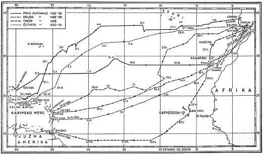

Prvo putovanje. Dana 3. 8. 1492. oko 8sati brodovi su dignuli sidra s pruda Saltesa nasuprot Huelvi i isplovili. Smjer puta je zapad, a cilj su bogate zemlje mirodija u istočnoj Aziji; usput će zaposjesti zemlje i otoke koje otkriju. Kolumbo nosi pismo što ga španjolski kralj i kraljica šalju velikom kitajskom kanu. Tako je započelo najznačajnije putovanje u povijesti čovječanstva. Brodovi putuju u konservi prema jugozapadu.
Kolumbo vodi i dnevnik (prvi pisani dnevnik u povijesti pomorstva), u koji svakog dana upisuje prevaljeni put i kurs, a bilježi i sve ostalo što smatra važnim. Dnevnik se sačuvao u rukopisu Las Cassasa, koji nije imao pred sobom original, nego samo prijepis. Ipak je dnevnik i u ovom obliku prvorazredan izvor, jer nije prepravljan, već samo kraćen. Flota plovi najprije na Kanarske otoke. Prije nego su stigli na Kanarske otoke, Pinti se oštetilo kormilo, pa su se morali zadržati 4 dana zbog popravka. U smjeru zapada odjedrili su tek 6. 9., a pošto se Španjolska 1480. obvezala Portugalu da neće upućivati ekspedicije južno od Kanarskih otoka, plovili su najjužnijim rubom španjolske zone. Mornare je 17. 9. prenerazila vijest da magnetska igla ne pokazuje sjever. Kako se, međutim, poslije 9 sati ponovno usmjerila prema sjeveru, Kolumbo je zaključio da se Polarna zvijezda ne nalazi točno na Polu, već da kruži oko njega. Poslije je primijetio da se magnetska igla otklanja još više prema zapadu i na taj je način otkrio promjenu magnetske deklinacije. Kad poslije mjesec dana puta nisu ugledali kopno, zapovjednik Pinte je predložio da skrenu k jugu. Kolumbo nije pristao na to, jer je bio uvjeren da Pinzón želi doći u Cipangu, dok je admiral htio stići u Kataj. Budući da su počeli viđati sve više ptica, skrenuo je sutradan ipak k jugozapadu. Noću 11. 10. pričinilo mu se da vidi neko daleko svjetlo, pa je preporučio mornarima da pooštre pažnju. Sutradan je Rodrigo de Triana, mornar s Pinte, prvi primijetio kopno.
Otkriveni su otok domorodci zvali Guanahani; Kolumbo ga je nazvao San Salvador; danas se zove Watling. Kolumbo je zabilježio da se otok nalazi na geografskoj širini Ferra (28°N), iako mu je točan položaj 4° južnije. Položaje otkrivenih zemalja Kolumbo je u izvještajima svjesno premještao više na sjever da ne budu u portugalskom ugovornom području. Kolumbo je jedrio dalje, otkrivao druge otoke u skupini Bahama i 28. 10. doplovio do jugoistočnog dijela sjeverne obale Kube, uvjeren da je to Cipangu (kako Marko Polo naziva Japan). Poslije je promijenio mišljenje i, držeći da je dojedrio do kontinenta i da se nalazi blizu Quinsaya, prijestolnice velikog kana, poslao mu je svoje izaslanike s pismom španjolskih vladara. Kad je shvatio da se prevario, proslijedio je put prema sjeverozapadu, a 12. 11. okrenuo natrag prema jugoistoku, jer je doznao da se u tom smjeru nalazi veliki otok Babeque (Haiti). Nakon nekoliko dana pobjegao je M. A. Pinzón s Pintom, zacjelo zato da pretekne Kolumba ili da prije njega donese u Španjolsku vijest o otkriću. Kolumbo je, međutim, stigao do sjeverozapadne obale Haitija, kojemu je dao ime Hispaniola, vjerujući i opet da je to Cipangu. U noći između 25. i 26. 12. nasukala se Santa Maria. Brod se nije mogao spasiti, pa je Kolumbu za povratak ostala samo Niña. Budući da se na nju nije mogla ukrcati i čitava posada Santa Marije, odlučio je Kolumbo da iskrca dio posade, koji će ostati u Novom svijetu. Sagradio je utvrdu La Navidad i u njoj ostavio četu svojih ljudi, koji su trebali istražiti unutrašnjost, sklopiti veze s domorodcima i tražiti zlato. Njegova briga za zlatom bila je shvatljiva, jer ako se u Španjolsku vrati bez zlata, vlada mu neće odobriti sredstva za drugo putovanje. U Europu je otplovio na početku januara 1493., a nakon nekoliko dana dostigao je Pintu. Kako je odlučio preploviti ocean bez zadržavanja, izabrao je kurs prema sjeveroistoku. Svakako je zanimljivo da je plovio onako kako to i danas savjetuju Pilot charts. Na povratku su azorski cikloni bacili Niñu najprije prema Azorima, a zatim u Portugal, na ušće Taja. Pinta se putem ponovno izgubila i vratila kući samostalno, a Kolumbo je pristao 15. 3. 1493. u luci Palosu, gdje je primljen s velikim slavljem.